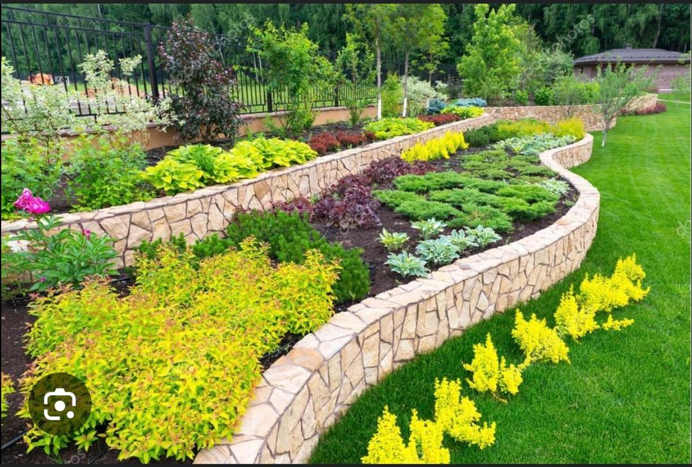

<!DOCTYPE html>
<html lang="fr">
<head>
    <head>
    <meta charset="UTF-8">
    <meta name="viewport" content="width=device-width, initial-scale=1.0">
    <link rel="stylesheet" href="conceptionterrasse.css">
    <title>Aménagement Paysager - Lucas Jardins</title>
    <meta name="description" content="Lucas Jardins vous propose un service complet d'aménagement paysager : conception, création et entretien d’espaces verts personnalisés.">

    <!-- Open Graph -->
    <meta property="og:title" content="Aménagement Paysager - Lucas Jardins">
    <meta property="og:description" content="Créez un jardin à votre image avec notre service d’aménagement paysager : massifs, allées, pelouses, rocailles et structures végétales.">
    <meta property="og:url" content="https://www.lucasjardins.fr/services/amenagement-paysager">
    <meta property="og:image" content="URL_image_amenagement_paysager.jpg">
    <meta property="og:type" content="website">
    <meta name="author" content="Lucas Jardins">

    <!-- Twitter -->
    <meta name="twitter:title" content="Aménagement Paysager - Embellissez vos extérieurs avec Lucas Jardins">
    <meta name="twitter:description" content="Conception et réalisation d'espaces verts harmonieux, fonctionnels et adaptés à votre environnement.">
    <meta name="twitter:creator" content="@lucasjardins">
    <meta name="twitter:site" content="@lucasjardins">

    <!-- JSON-LD -->
    <script type="application/ld+json">
    {
        "@context": "https://schema.org",
        "@type": "Service",
        "name": "Aménagement paysager",
        "description": "Service professionnel d’aménagement paysager incluant conception de jardin, création de massifs, installation de gazon et agencement végétal.",
        "provider": {
            "@type": "Gardener",
            "name": "Lucas Jardins",
            "url": "https://www.lucasjardins.fr",
            "logo": {
                "@type": "ImageObject",
                "url": "https://plomberie-Jean-Dupont.fr/image/logo.png",
                "width": 300,
                "height": 200
            },
            "address": {
                "@type": "PostalAddress",
                "streetAddress": "102 Chemin du Génie",

</head>
<body>
    <header>
        <h1>Aménagement Paysager</h1>
        <div class="image-container">
            
            
            
            
            
            
        </div>
    </header>
    <main>
        <section id="description">
            <h2>Transformez votre espace extérieur</h2>
            <p>Chez Lucas Jardins, nous sommes spécialisés dans l'aménagement paysager pour valoriser votre espace extérieur. Que vous souhaitiez un jardin moderne, un espace naturel ou une ambiance méditerranéenne, notre équipe conçoit et réalise des projets uniques, adaptés à vos envies et à l'architecture de votre maison.</p>

            <h2>Pourquoi choisir l'aménagement paysager ?</h2>
            <p>Un aménagement paysager bien conçu apporte de nombreux avantages :</p>
            <ul>
                <li><strong>Esthétique et valorisation :</strong> Un espace harmonieux et bien agencé améliore la beauté et la valeur de votre propriété.</li>
                <li><strong>Fonctionnalité accrue :</strong> Les zones sont organisées pour répondre à vos besoins quotidiens, comme un coin détente ou un espace repas.</li>
                <li><strong>Durabilité :</strong> Nos solutions intègrent des plantes adaptées au climat local, réduisant l'entretien et les arrosages.</li>
                <li><strong>Respect de l'environnement :</strong> Utilisation de matériaux durables et de pratiques écologiques.</li>
                <li><strong>Bien-être :</strong> Un jardin équilibré améliore votre qualité de vie en offrant un espace de détente et de ressourcement.</li>
            </ul>

            <h2>Nos services d'aménagement paysager</h2>
            <p>Nous proposons une gamme complète de services pour transformer votre extérieur :</p>
            <ul>
                <li><strong>Conception sur mesure :</strong> Étude des sols, analyse du climat et planification d’un espace paysager personnalisé.</li>
                <li><strong>Plantations variées :</strong> Sélection de végétaux résistants et esthétiques, adaptés à votre environnement.</li>
                <li><strong>Aménagement de massifs :</strong> Création de compositions florales en fonction des saisons et de l'exposition.</li>
                <li><strong>Installation d'allées et chemins :</strong> Pavage, dallage ou gravier pour relier les différentes parties de votre jardin.</li>
                <li><strong>Structures paysagères :</strong> Pergolas, murets, bordures et éléments décoratifs pour structurer l'espace.</li>
                <li><strong>Systèmes d'irrigation :</strong> Installation de dispositifs d’arrosage économes en eau.</li>
                <li><strong>Aménagement de zones de détente :</strong> Création de terrasses en bois ou en pierre, mobilier intégré et éclairage extérieur.</li>
            </ul>

            <h2>Processus de réalisation</h2>
            <p>Notre approche inclut :</p>
            <ol>
                <li><strong>Écoute de vos besoins :</strong> Comprendre vos attentes et vos préférences.</li>
                <li><strong>Étude et planification :</strong> Analyse du terrain et élaboration d'un plan détaillé.</li>
                <li><strong>Conception paysagère :</strong> Création d’un projet visuel pour valider l’aménagement.</li>
                <li><strong>Mise en œuvre :</strong> Réalisation des travaux par nos équipes expérimentées.</li>
                <li><strong>Entretien :</strong> Suivi et entretien régulier pour préserver la qualité de votre aménagement.</li>
            </ol>

            <h2>Nos engagements</h2>
            <p>Nous nous engageons à vous fournir un aménagement paysager de haute qualité, en alliant esthétique, durabilité et respect de l'environnement. Grâce à notre savoir-faire et à notre passion pour le végétal, votre jardin deviendra un espace de vie accueillant et ressourçant.</p>

        </section>
    </main>
    <footer>
        <!-- Footer conservé tel quel -->
    </footer>
</body>
</html>
